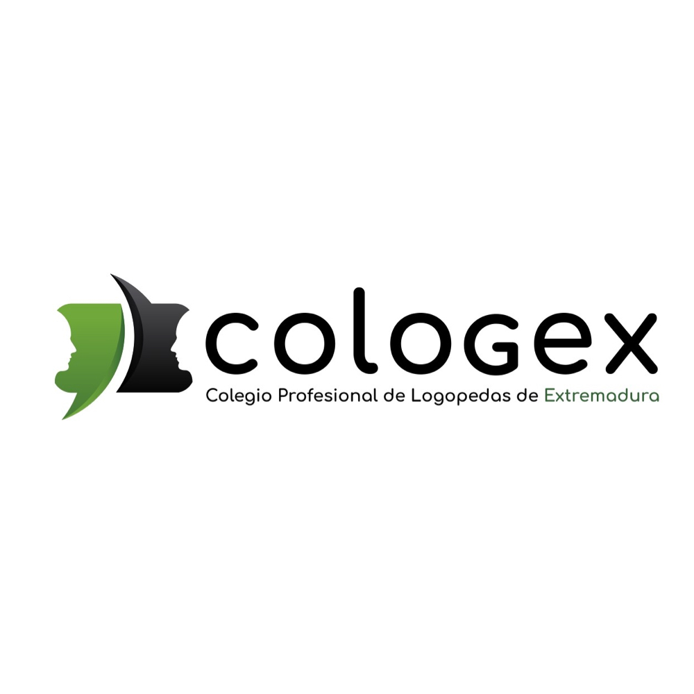

Antes de entrar
Tu trabajo no necesita más ruido.
Necesita herramientas que entiendan lo que pasa entre una persona, una familia y una sesión. En un minuto, dibujamos tu punto de partida.
Anónimo. Sin correo. Sin datos de pacientes.

Necesita herramientas que entiendan lo que pasa entre una persona, una familia y una sesión. En un minuto, dibujamos tu punto de partida.
Solo una formación útil si parte de tus situaciones reales.
Puedes marcar más de una respuesta.
Empieza por tu valor, no por la tecnología.
Puedes marcar varias necesidades.
Puntúate con honestidad: esta parte nos ayuda a ajustar el ritmo.
Una necesidad concreta nos ayuda a diseñar una webinar que te sirva.
En la webinar verás cómo usar IA para ganar capacidad, no para sustituir lo que haces mejor.
Tus respuestas se guardan de forma anónima para adaptar la webinar y la formación.